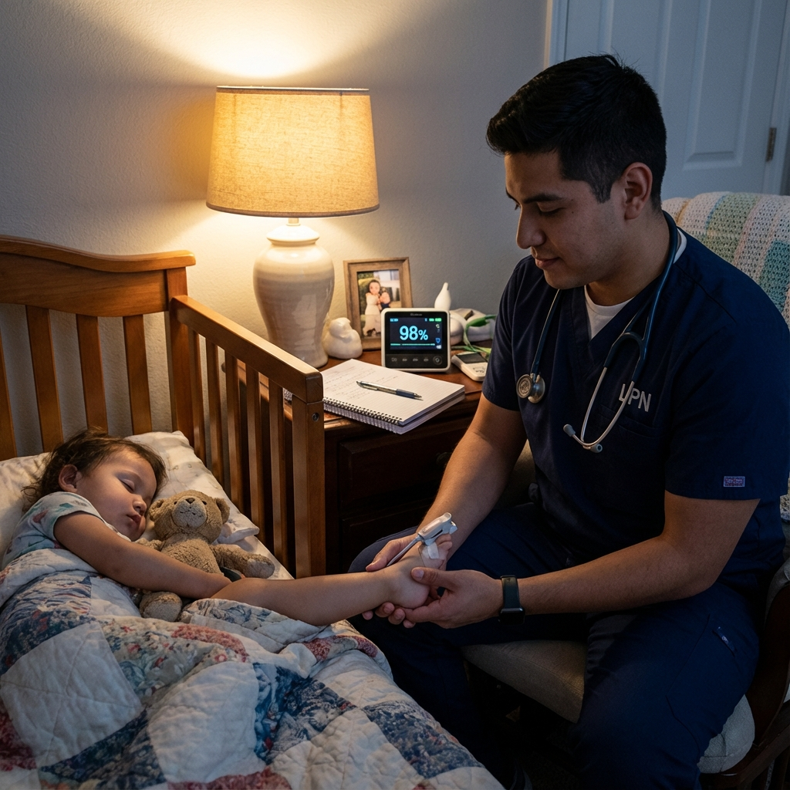
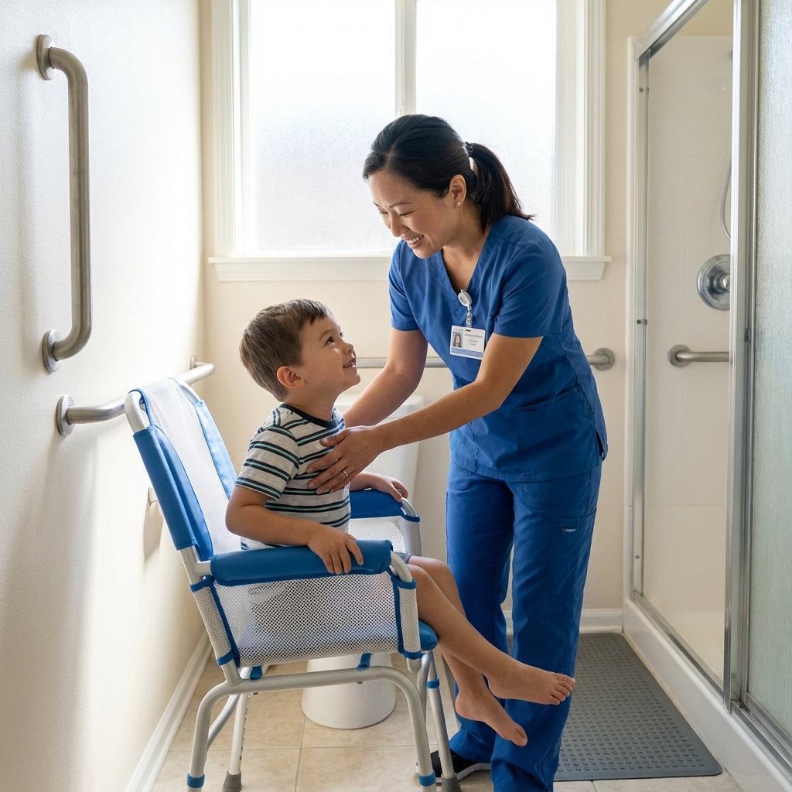
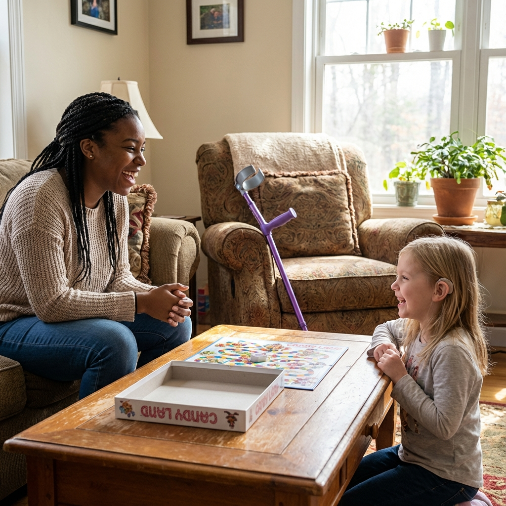

Construya una carrera significativa cuidando a los niños de Georgia
Únase a nuestro equipo de profesionales de la salud dedicados que marcan una profunda diferencia en la vida de los médicos. niños frágiles y sus familias.
Más que un trabajo: una vocación
En No Cost Nurse, somos más que un lugar de trabajo: somos un equipo unido por un propósito. Todos los días, nuestro Las enfermeras y los cuidadores marcan una profunda diferencia en las vidas de los niños médicamente frágiles y en el familias que los aman.
Si está buscando una carrera que combine la excelencia clínica con una conexión humana genuina, ha encontró su hogar.
Las recompensas de la salud pediátrica en el hogar
Lograr un impacto duradero
Construya relaciones significativas con los niños y las familias a las que presta servicios. testigo hitos y celebrar el progreso.
Flexibilidad entre el trabajo y la vida personal
Ofrecemos horarios que se adaptan a sus necesidades: turnos diurnos, nocturnos, entre semana o fines de semana.
Atención personalizada
Atención centrada en un paciente a la vez, como debería ser la atención sanitaria. No cargas abrumadoras de pacientes.
Compensación competitiva
Tasas de pago competitivas, pago semanal confiable y beneficios integrales para empleados calificados.

Posiciones abiertas
Enfermera registrada (RN)
Tiempo completo y tiempo parcial DisponibleTu papel
Como enfermera registrada de No Cost Nurse, brindará atención de enfermería especializada a niños médicamente frágiles. en sus hogares. Evaluará las condiciones del paciente, desarrollará e implementará planes de atención, administrará medicamentos. y tratamientos, y actuar como líder clínico del equipo de atención.
Las responsabilidades incluyen:
- Evaluaciones integrales de pacientes y monitoreo continuo
- Administración de medicamentos, terapia intravenosa y tratamientos especializados.
- Atención de respiradores y traqueotomías para pacientes dependientes de las vías respiratorias.
- Sonda G y otros métodos de alimentación enteral
- Cuidado de heridas y cambios complejos de apósitos.
- Desarrollo y documentación del plan de atención.
- Educación y apoyo familiar.
- Coordinación con médicos y equipo interdisciplinario.
Calificaciones:
- Licencia actual de Georgia RN (o licencia estatal compacta)
- Certificación CPR/BLS (preferiblemente PALS)
- Experiencia mínima de 1 año en enfermería (se prefiere experiencia pediátrica)
- Transporte confiable y licencia de conducir válida.
- Enfoque compasivo y centrado en el paciente
Lo que ofrecemos:
- Tarifas por hora competitivas basadas en la experiencia y la complejidad del caso
- Horarios flexibles: días, noches y fines de semana disponibles.
- Orientación remunerada y formación continua.
- Liderazgo clínico solidario y soporte de guardia 24 horas al día, 7 días a la semana
- Cobertura de seguro por negligencia

Enfermera práctica autorizada (LPN)
Tiempo completo y tiempo parcial DisponibleTu papel
Como LPN de No Cost Nurse, brindará atención de enfermería práctica a pacientes pediátricos bajo RN supervisión. Supervisará las condiciones del paciente, administrará medicamentos, realizará procedimientos especializados y garantizar la seguridad y comodidad de los niños bajo su cuidado.
Las responsabilidades incluyen:
- Monitoreo de signos vitales y observación del paciente.
- Administración de medicamentos (orales, inyectables, tópicos, inhalados)
- Atención de traqueostomía, incluida la succión y el cuidado de rutina del tubo.
- Administración de alimentación por sonda G y cuidado del sitio
- Cuidado de heridas y cambios de apósito.
- Documentación y reporte de cuidados.
- Educación del paciente y la familia.
- Colaboración con supervisores de enfermeras registradas y equipo de atención.
Calificaciones:
- Licencia LPN actual de Georgia (o licencia estatal compacta)
- Certificación RCP/BLS
- Experiencia previa en enfermería (se prefiere pediatría, pero capacitará al candidato adecuado)
- Transporte confiable
- Personalidad cálida, paciente y compasiva.
Lo que ofrecemos:
- Pago por hora competitivo
- Turnos flexibles que se adaptan a tu disponibilidad.
- Orientación integral y formación pediátrica.
- Vías de avance profesional (programas de asistencia de matrícula RN)
- Ambiente de equipo de apoyo
Asistente de enfermería certificado (CNA)
Tiempo completo y tiempo parcial DisponibleTu papel
Como CNA de No Cost Nurse, brindará atención personal esencial y apoyo a pacientes pediátricos menores de supervisión de enfermería. Sois las manos que ayudan a los niños en sus rutinas diarias con paciencia, dignidad y cuidado genuino.
Las responsabilidades incluyen:
- Asistencia para baño, aseo e higiene personal.
- Soporte para vestirse y desvestirse
- Asistencia en la alimentación y preparación de comidas.
- Asistencia a la movilidad, traslados y posicionamiento.
- Cuidados del baño y la incontinencia
- Ejercicios de rango de movimiento según lo delegado.
- Monitoreo de signos vitales
- Actividades de compañerismo y compromiso.
- Documentación precisa de la atención brindada.
Calificaciones:
- Certificación actual de Georgia CNA
- Certificación RCP/BLS
- Se prefiere experiencia con poblaciones pediátricas o con necesidades especiales.
- Transporte confiable
- Amor genuino por trabajar con niños.
- Paciencia, amabilidad y actitud positiva.
Lo que ofrecemos:
- Tarifas por hora competitivas
- Programación consistente con casos a largo plazo.
- Formación remunerada y desarrollo de habilidades.
- Camino a la carrera de enfermería (ayuda de matrícula disponible)
- Relaciones gratificantes con los pacientes uno a uno


Asistente de cuidado personal (PCA)
Tiempo completo y tiempo parcial DisponibleTu papel
Como asistente de cuidado personal de No Cost Nurse, brindará asistencia no médica y compañía a niños con necesidades especiales. A menudo eres la cara consistente y amigable que ayuda a los niños a sentirse seguros y apoyado durante todo el día.
Las responsabilidades incluyen:
- Asistencia con las actividades de la vida diaria.
- Preparación de comidas y apoyo a la alimentación.
- Limpieza ligera relacionada con la atención al paciente.
- Acompañamiento a citas y actividades
- Participación en juegos, lectura y actividades de desarrollo.
- Seguimiento y notificación de cambios al personal de enfermería.
- Seguir planes de atención personalizados
- Construir relaciones de confianza y apoyo con los niños y las familias.
Calificaciones:
- Diploma de escuela secundaria o equivalente
- Certificación PCA o disposición para completar la capacitación.
- Certificación de RCP (podemos ayudarle a obtenerla)
- Se prefiere experiencia previa con niños o cuidado de niños.
- Transporte confiable
- Personalidad cálida, confiable y paciente.
- Borrar verificación de antecedentes
Lo que ofrecemos:
- Pago por hora con horas consistentes
- Soporte pago de capacitación y certificación
- Opciones de programación flexibles
- Un trabajo significativo que marca una diferencia real
- Equipo de apoyo y oportunidades de crecimiento profesional.
De la aplicación a su primer turno
Hemos simplificado nuestro proceso de contratación para que pueda comenzar rápidamente y al mismo tiempo garantizar la mejor opción para nuestros pacientes.
Aplicar en línea
Envíe su solicitud y currículum a través de nuestro rápido formulario en línea
Detección telefónica
Breve conversación para conocer tu experiencia y objetivos profesionales.
Entrevista
Reúnase con nuestro equipo para analizar oportunidades y encontrar la opción adecuada
Credencialización
Verificación de antecedentes y verificación de licencias y certificaciones.
Orientación
Orientación remunerada integral que incluye capacitación específica en pediatría
Coincidencia de casos
Lo emparejamos con pacientes según sus habilidades, personalidad y horario.
Comenzar el cuidado
Comience su gratificante carrera marcando la diferencia para los niños de Georgia
Por qué a nuestros cuidadores les encanta trabajar aquí
"Después de años en enfermería en el hospital, estaba agotado. Salud en el hogar con No Cost Nurse Me devolvió mi pasión. De hecho, tengo tiempo para conectarme con mi paciente y verlo crecer. el La flexibilidad de estar ahí para mi propia familia no tiene precio".
"No Cost Nurse me apoyó durante mi certificación CNA y ahora me están ayudando seguir mi título de enfermería. No es sólo un trabajo: ellos realmente invierten en su crecimiento. Además, mi paciente tiene se vuelven como una familia para mí."
¿Listo para comenzar una carrera que importe?
Únase a nuestro equipo y marque una diferencia real en las vidas de los niños médicamente frágiles de Georgia.